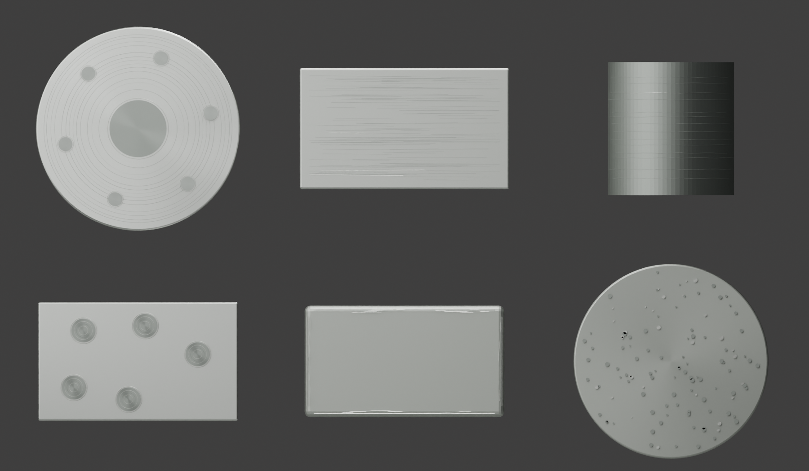
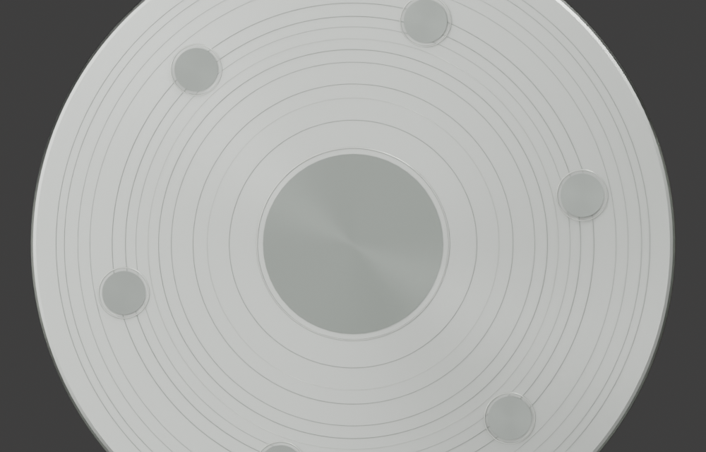
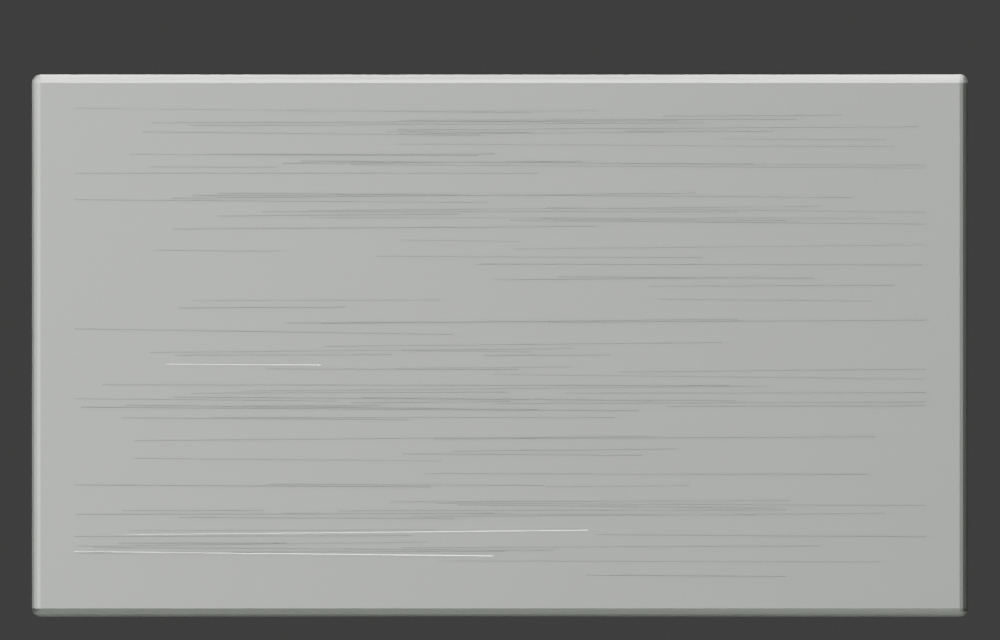
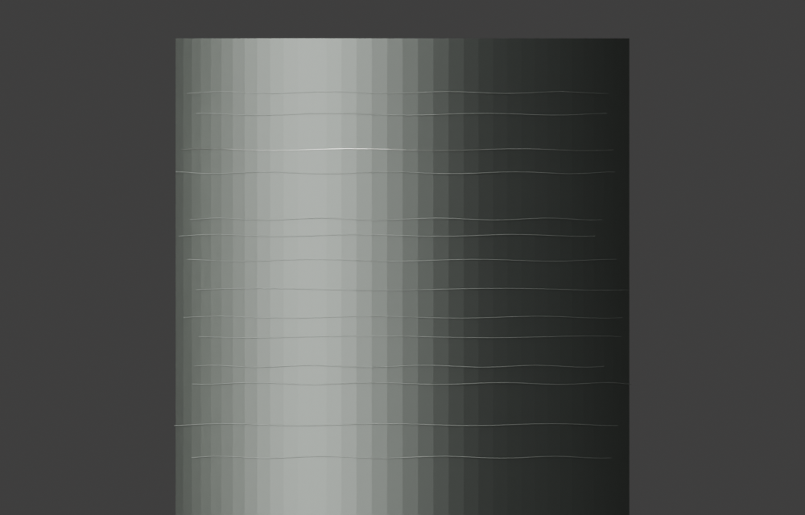
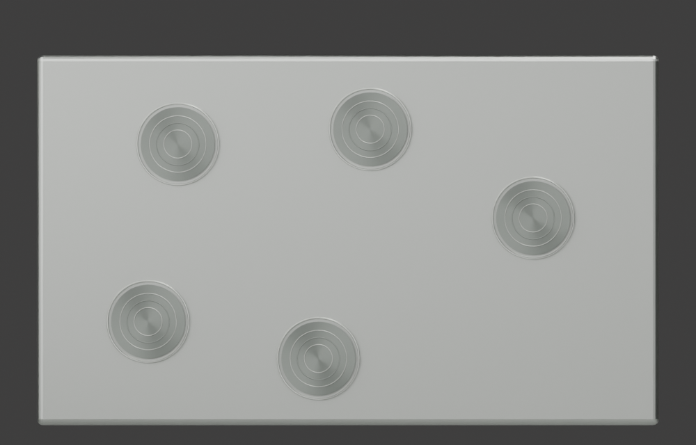
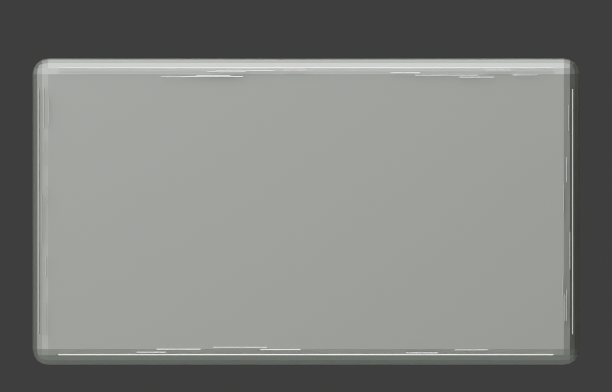
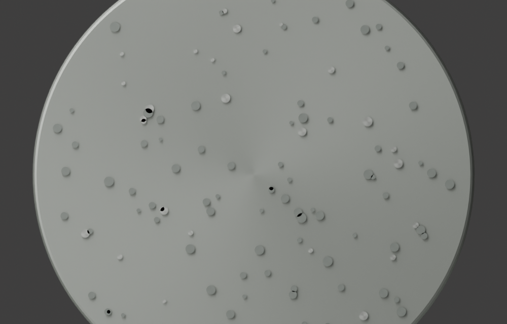

Goal 25-C / real machining traces / no procedural wave
真实加工痕迹样片
这组样片把加工痕迹从 Goal 25-D 的材质分区中单独拆出来，用显式几何痕迹表达车削、拉丝、内孔、螺栓孔、倒角磨亮和珠喷微坑，避免用 procedural shader 直接冒充制造痕。







Trace IDs
- G25-TRACE-MACH-FLANGE-RADIAL-GEOM-01法兰端面车削/平面加工痕Concentric tool-path rings and hole-rim witness marks are explicit torus geometry on a machined stainless flange coupon.
G25-SS-MACH-FLANGE-RADIAL-01 - G25-TRACE-BRUSH-NO4-LINEAR-GEOM-01#4 线性拉丝/砂带痕Overlapping short linear strokes with small angle and length variation are explicit curve geometry, not a shader wave.
G25-SS-BRUSH-NO4-LINEAR-01 - G25-TRACE-MACH-BORE-CIRCULAR-GEOM-01内孔环向加工痕A cutaway bore wall uses circumferential curve rings at varying pitch to read as boring/turning marks inside the flow passage.
G25-SS-MACH-BORE-CIRCULAR-01 - G25-TRACE-MACH-BOLT-BORE-DARK-GEOM-01螺栓孔暗加工内壁Small dark cylindrical hole caps and rim witness rings separate bolt bores from broad flange faces.
G25-SS-MACH-BOLT-BORE-DARK-01 - G25-TRACE-EDGE-DEBURR-BURNISH-GEOM-01倒角去毛刺磨亮痕Thin bright strokes on bevel-adjacent edges emulate final deburring and handling polish without brightening the whole part.
G25-SS-EDGE-BURNISH-01 - G25-TRACE-BLAST-BEAD-MICROPIT-GEOM-01珠喷/喷砂微坑参考Non-directional micro-pit dots are small geometry marks on a satin cast coupon, useful as the restrained boundary for blasted body surfaces.
G25-SS-CAST-BLASTED-SATIN-01